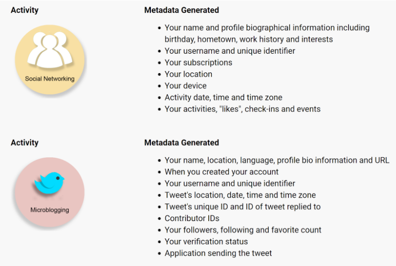

home
home
 page_1
page_1
 citations
citations
Page 2 - Notepad
File Edit Search
Eva and Marco provide a glimpse at addressing a problem that, at the time, was at its earlier stages. However, today’s society proves that it is nearly impossible to detangle one’s identity from technology. As long as an individual desires to live and function in society, they have to interlace their life and identity in data and the internet. Thus, there comes the question of where humanity draws the line between access to information and the notion of privacy.
Metadata provides a primary example of the growing concerns that come with technology. Metadata, defined by the Office of the Privacy Commissioner of Canada, is “data that provides information about other data. It is information that is generated as you use technology, and lets you know the who, what, where, when, and how of a variety of activities” (“Metadata and Privacy: A Technical and Legal Overview”). Based on the type of activity, metadata can range from name, age, date of birth, to location, urls, and IP address.
 Start
Start